1. Install the Creator Skill
Copy scriptwidget-creator into Claude Code’s skills folder. Keep using your own Agent and model.
Write a few lines of JSX-style JavaScript and get a real home screen widget. The same package runs on iPhone, iPad, Mac and Android, and in preview on Windows and Linux (Omarchy).
Use your own Agent and model. Try the browser preview without installing anything.
main.jsxconst items = ["Plan the day", "Deep work", "Take a walk"]; $render( <vstack padding="14" background="#2563eb"> <hstack> <text font="title3" color="white">Today</text> <spacer/> <date date="now" style="date"/> </hstack> {items.map((item, i) => <hstack spacing="8"> <badge text={String(i + 1)}/> <text color="white">{item}</text> </hstack> )} </vstack>);Pick a template, change the JSX in the built-in editor, and add the result to your Home Screen or Lock Screen.
iOS 16 or later
Download on the App Store ↗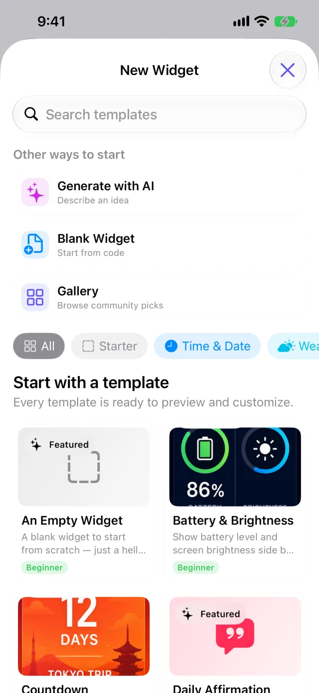
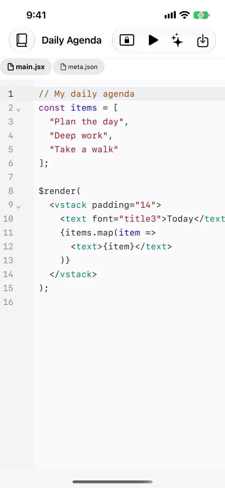
On iPad the editor and the widget preview sit side by side. Run the script and the preview redraws, with any runtime problem listed below it.
iPadOS 16 or later
Download on the App Store ↗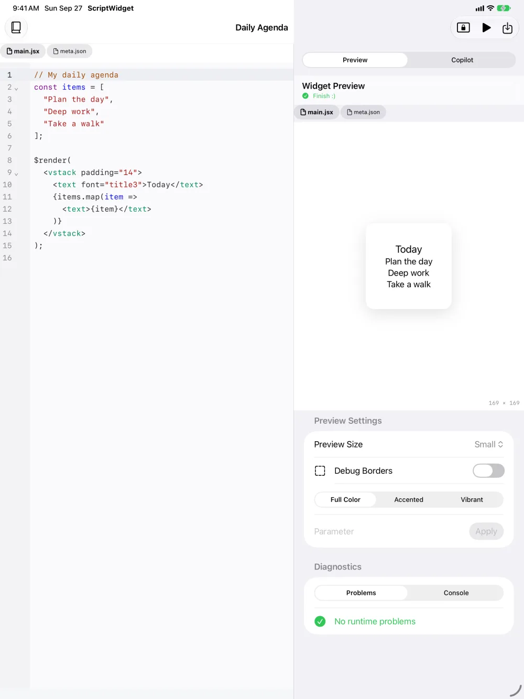
A full authoring environment: multi-file projects, diagnostics, API and component references, and widgets for your desktop or Notification Center.
macOS 26 or later
Download on the Mac App Store ↗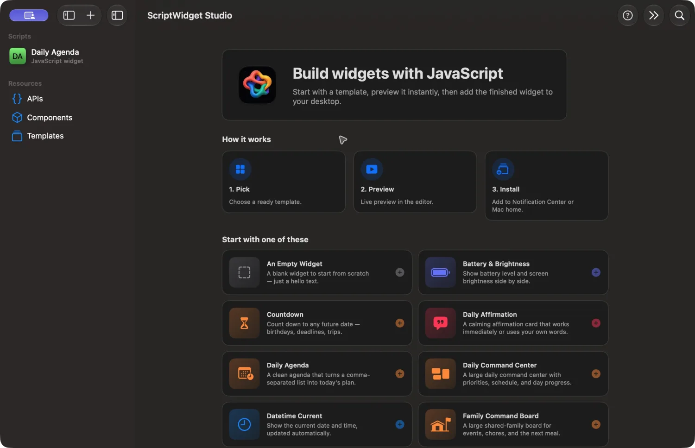
It runs the same widget packages with its own JavaScript engine and renderer, and has an AI conversation that makes and changes widgets with your own provider key. Scrolling lists, wallpaper colors and an automation entry point exist only on Android.
Android 13 or later · tested on a Pixel 6 and emulators
Get the APK on GitHub ↗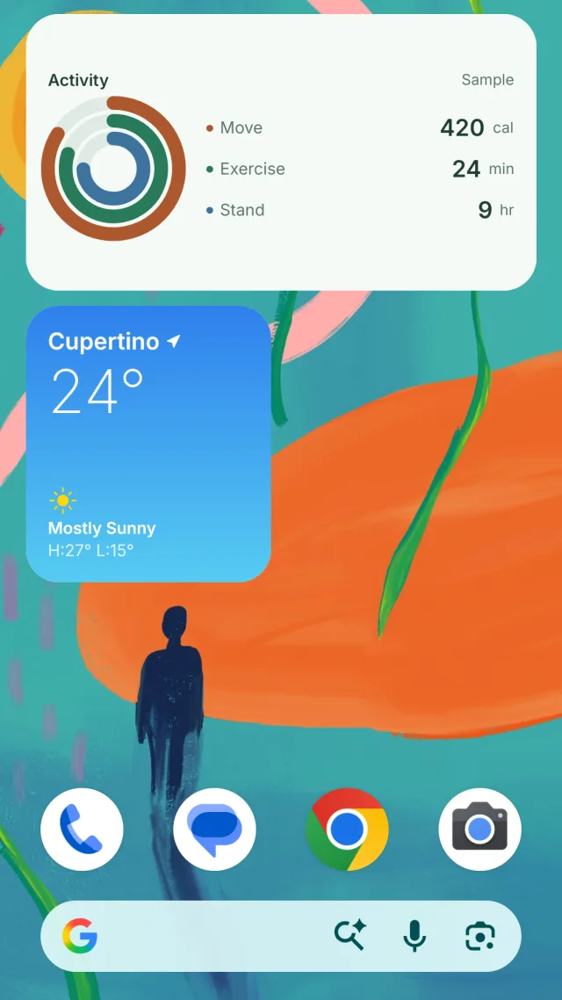
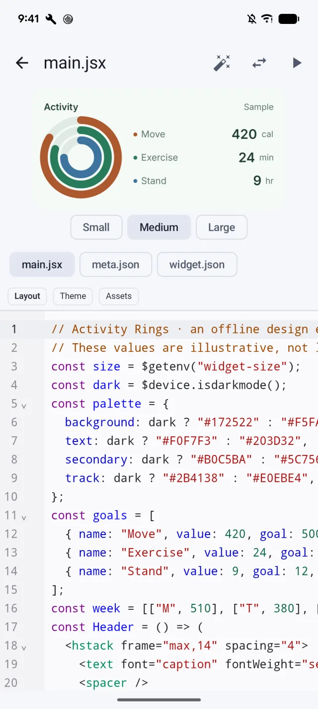
The Windows preview puts the same widget packages on the desktop, below your other windows, with GIFs and clock and swing animations. It has an AI assistant that works with your own provider or a local Ollama or LM Studio server, the Gallery and Skills. A management window has templates and a code editor with live preview. Device data such as health, calendar, location and music is not available.
Windows 11 (21H2) or later · Microsoft Store · preview
Get it from Microsoft Store ↗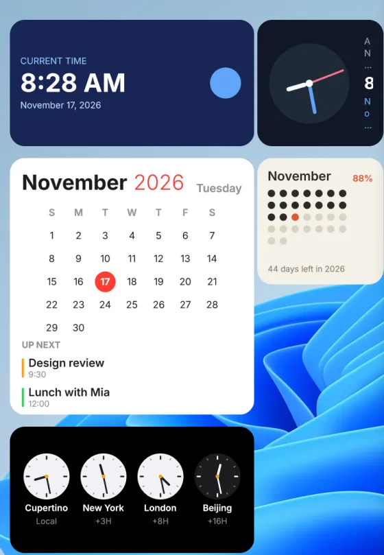
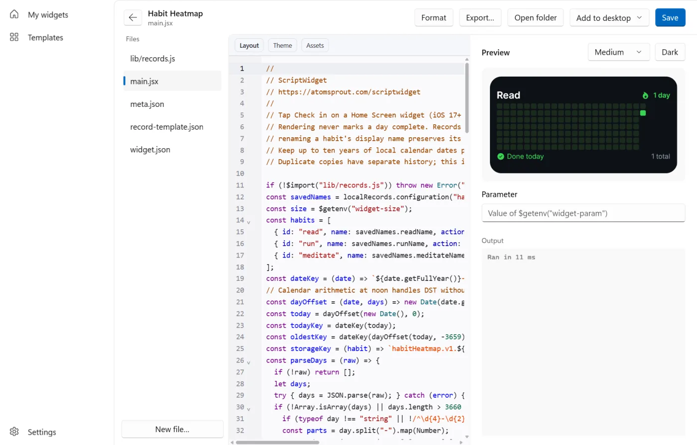
A preview for Omarchy 4.5. It shows the same widget packages on the desktop layer, through a plugin of the Omarchy shell, with animations. It comes with a management window, an AI conversation, the Gallery and a command line. Widgets can use the playing track, desktop notifications and files you choose; health, calendar, contacts and location are not available.
Omarchy 4.5 · x86_64 and aarch64 · preview
Get the archive on GitHub ↗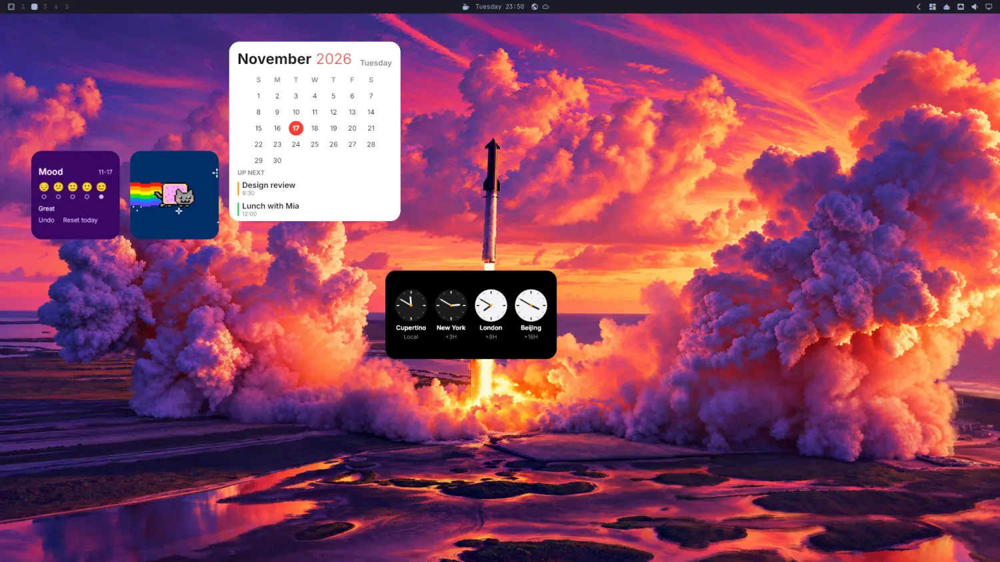
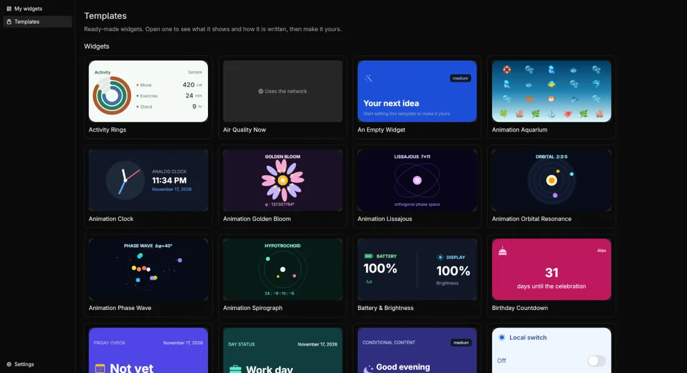
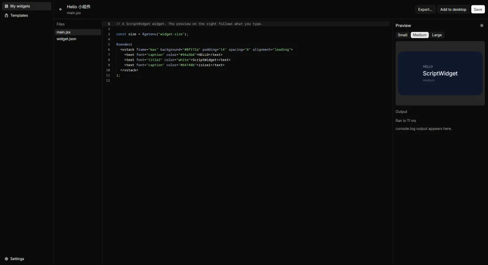
Write, preview and export a .swt package in any desktop browser. The preview uses the same layout engine as the Android app.
A current desktop browser
Open Web Studio ↗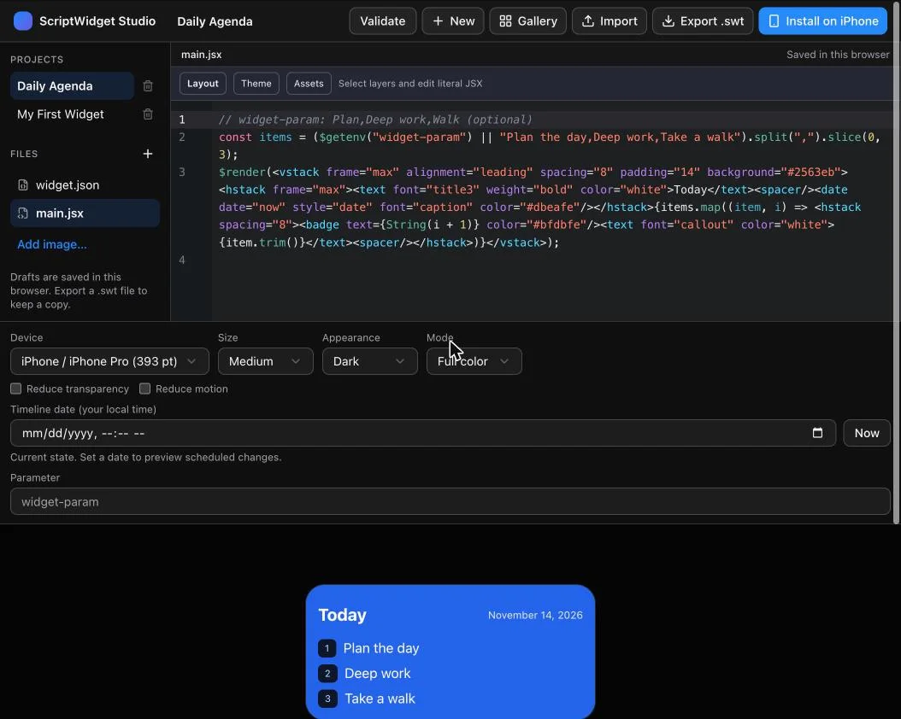
Android is available as a FOSS APK on GitHub. It has no push-triggered widget updates. On Google Play it is in closed testing: join the Atomsprout Testers group, then become a tester and install from Google Play (step-by-step guide).
Windows and Linux are previews. They run the same Package 2.0 widgets with the QuickJS engine, without device data such as health, calendar and location. The Windows preview is available from Microsoft Store; see the Windows guide. The Linux version is for Omarchy 4.5: unpack the archive and run sh install.sh, per user, without root, or install the release's PKGBUILD with makepkg -si and add the shell plugin with omarchy plugin add https://github.com/everettjf/omarchy-scriptwidget.git --enable. It was tested on one aarch64 Omarchy 4.5 machine; the x86_64 archive has not yet been run on an x86_64 computer. See the Linux guide.
Copy scriptwidget-creator into Claude Code’s skills folder. Keep using your own Agent and model.
Use /scriptwidget-creator to generate native JavaScript + JSX with the right runtime APIs and package permissions.
The CLI opens Web Studio with the generated widget already loaded. Validate with native Mac previews and export a .swt for your device.
/scriptwidget-creator Create a reading habit widget
and show it in Web Studio.Compose familiar declarative layouts and use versioned APIs for data, files, networking, storage, device state, and more.
Edit with diagnostics, inspect runtime output, and preview multiple widget families without repeating an Xcode build loop.
Use versioned manifests, explicit permissions, host allowlists, and the community Gallery to distribute reusable widgets.
Star the repository to follow releases, open an issue with a real workflow, or contribute a template to the verified Gallery.